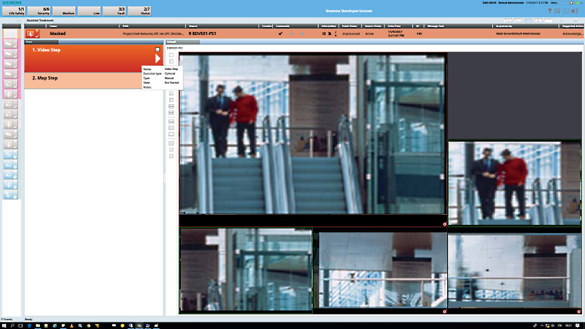

Handling Alarms with Video
When handling alarms, you can use live video images to help you investigate and verify an alarm. The way you access video when handling an alarm depends on whether the alarm is configured for assisted or for investigative treatment.
Use Video in Investigative Treatment
An alarm occurred that is NOT configured with Assisted Treatment support (in this case, Investigative Treatment launches instead). The object issuing the alarm may have a video association.
- The alarm displays in the Event List window.
NOTE: Depending on the severity of the alarm and on the configuration of the system, the alarm may also display in an Event Detail bar, underneath the Summary bar.
- Double-click the event button of the event.
NOTE: In UL 864-compliant and ULC S527-compliant fire stations, single-click the event button of the event. - The Investigative Treatment window displays in the work area, providing a new System Manager with its selection automatically navigated to the object issuing the alarm.
- Issue the required initial alarm-handling commands, such as Acknowledge or Silence. Then investigate the alarm using the System Manager tools. From here, you can access video support in the following ways:
- If the object issuing the alarm has a video association, click the camera link in Related Items to display the video view in the Secondary pane.
- In System Browser, select Application View and navigate to the Video node. Then, select the Video tab to display the video view.
- The currently selected layout is used. If a camera is associated to the object issuing the alarm, it automatically displays in the first monitor. In addition, depending on the configuration of the system, further monitors may be used to display alarm-related video images selected via automatic reactions.
- Continue handling the alarms, sending any required commands, until the event is closed.
Use Video in Assisted Treatment
An alarm occurred that is configured with Assisted Treatment support. The object issuing the alarm has a video association, and/or a video step is configured in the Assisted Treatment procedure.
- The alarm displays in the Event List window.
NOTE: Depending on the severity of the alarm and on the configuration of the system, the alarm may also display in an Event Detail bar, underneath the Summary bar.
- Double-click the event button of the event.
NOTE: In UL 864-compliant and ULC S527-compliant fire stations, single-click the event button of the event. - The Assisted Treatment window displays in the work area, providing a step by step procedure for handling the alarm.
- From the event descriptor at the top of the screen, issue any required alarm-handling commands, such as Acknowledge or Silence.
- Follow the assisted procedure, selecting and completing the suggested steps. For more information search for “Assisted Treatment Window Reference“.
- If the procedure includes a Video Step, when you select that step the video view will display a grid of live or automatically-recorded video images relevant to the event, or to the object in alarm.
- Monitors that are playing back recorded video are highlighted with a green border. Monitors showing live video do not have any colored border when unselected. Hover over a monitor to access additional playback/live video controls. For details see Video View Reference.

- Use the toolbar to adjust the layout of the video view and make sure it displays all the monitors.
- During any step of the procedure, click the camera association link in Related Items to display the video view in the Secondary pane and get the live video images of the area in alarm condition.
- Complete the assisted procedure and send any final alarm-handling commands to close the event.